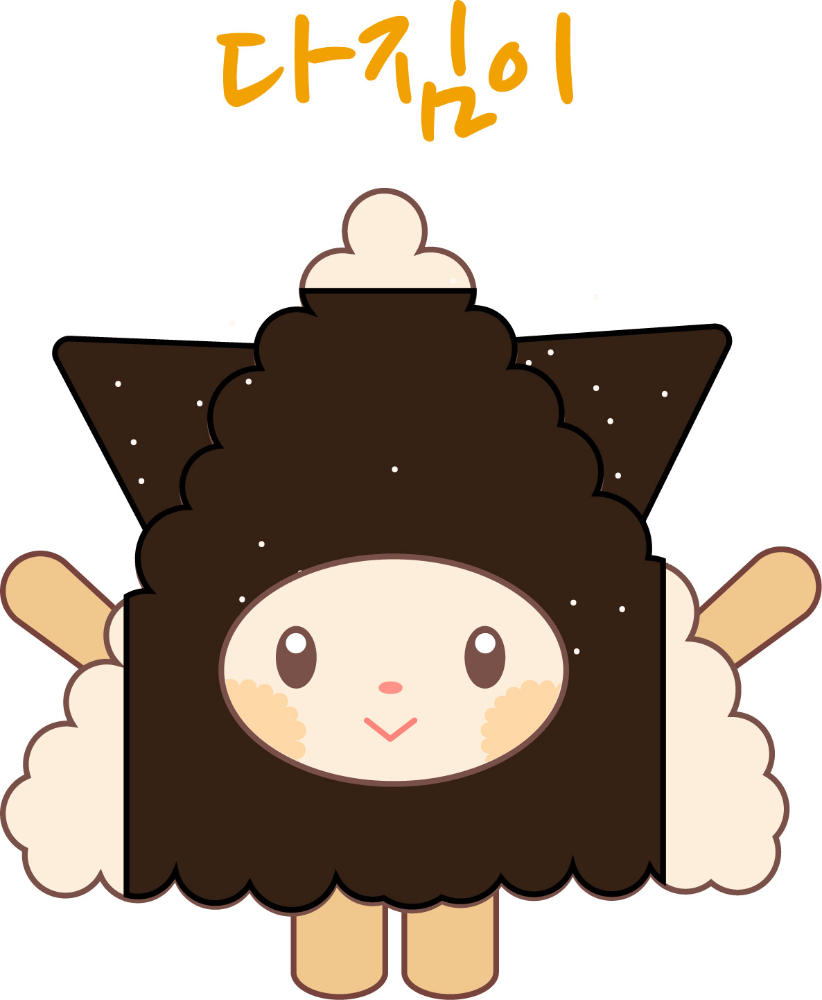

Main Animation
삼각김밥을 아르바이트를 통해 직접 만들고 판매해보며,
브랜드의 디자인에 대해 고민해보고 조사하면서
브랜드에 알맞는 애니메이션으로 만들게 되었다.
character

실제 사용되는 상자의 디자인을 제조공간으로 표현하여
상자안에서 삼각김밥이 만들어져 관계성을 넣었다.
이를 통해 브랜드를 각인시키고 짧은 스토리를 만들었다.
상자안에서 삼각김밥이 만들어져 관계성을 넣었다.
이를 통해 브랜드를 각인시키고 짧은 스토리를 만들었다.

프렌차이즈 [강다짐]의 정체성인 삼각김밥을 사용하여
캐릭터를 제작하였다. 일반적인 삼각김밥의 김을 붙이는 방식과
강다짐 삼각김밥 방식의 차이를 캐릭터의 뿔처럼 표현하여
김을 통해 캐릭성을 넣었습니다.
캐릭터를 제작하였다. 일반적인 삼각김밥의 김을 붙이는 방식과
강다짐 삼각김밥 방식의 차이를 캐릭터의 뿔처럼 표현하여
김을 통해 캐릭성을 넣었습니다.